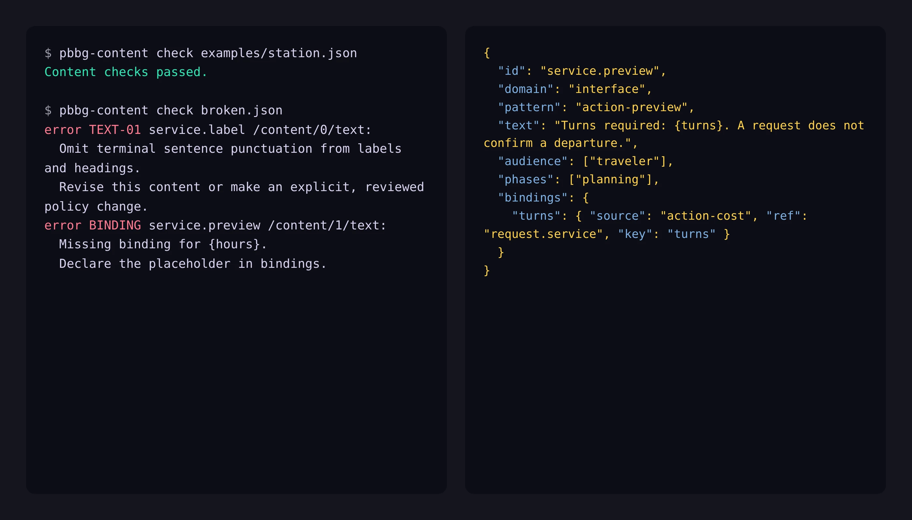

PBBG Content Schema
A content architecture for browser games built with agents. JSON Schemas, scoped writing policies, and a linter that keep three things apart: the words on the buttons, the words in the story, and the numbers that decide what happens. I pulled it out of Coalition and published it on its own.

{turns} in the sentence binds to the action’s declared cost, so changing the cost changes the sentence.The problem
Building Coalition with agents showed the same failure over and over. Ask an agent to shorten a line of dialogue and it rewrites a button. Ask it to add a scene and it infers the costs and the prerequisites from scattered prose and code, and where it can’t infer, it invents something plausible. Ask it to fix the copy on an action and the die roll under that action moves with it. Interface copy, story, and rules lived in the same strings, so no edit was safe.
What it separates
A bundle declares four kinds of thing with four owners. Game definitions own costs, requirements, conditions, and typed effects. Narrative owns scene text, dialogue, and who’s speaking. Interface owns labels, headings, status lines, and errors. A content policy supplies the writing rules for each, scoped by domain and pattern. No terminal punctuation on a label. No action label over six words. No raw HTML in prose.
Text never carries a number of its own. A sentence template binds {turns} to a declared action cost. It can bind a name to a public entity, or a value to a fact the reader’s role and phase are allowed to see. Change the cost in the game definitions and every sentence that names it changes with it. Declare a fact as hidden from a role and the renderer refuses to put it in that role’s text. That last part is what Coalition’s government side needs: a player who must never see the candidate’s real position while the engine knows it exactly.
The checker
A local CLI validates a bundle against the schema, then runs reference and policy checks. It catches duplicate IDs, dangling references between scenes and events, and conditions on facts that don’t exist. It catches placeholders with no binding, speakers that aren’t declared, and text that a role shouldn’t receive. Every finding carries a rule ID, a JSON pointer, a message, and a repair hint. The whole report is available as JSON, so an agent can read it as a tool result. A second command, guidance, returns the rules the checker enforces plus the writing guidance for one domain and pattern. A host can put the policy in front of a model before it edits rather than after.
There are fourteen content patterns across the two domains. Action label, navigation or heading, action preview, blocked action, and arrangement status. Report, dialogue, scene, and card. Action result, technical error, empty state, tutorial, and ending. Every one of them exists because Coalition has it.
How it’s built
- Schemas
- Two JSON Schemas, one for bundles and one for policies, validated with Ajv. Version 0.5.0 rejects unknown fields and versions, so a misspelled key fails instead of becoming ignored data.
- Reference code
- A small Node module for validation, role and phase projection, text rendering, and task guidance, and a CLI over it. Node 20 or later, no network calls, no model calls, no telemetry.
- Example
- A fictional transit station with no connection to Coalition’s setting, so the format is shown without the game.
- Policy
- An editable base policy with separate interface and narrative guidance. A project replaces it whole with
--policy; there is no inheritance to reason about. - License
- Eclipse Public License 2.0, with the plain-language and design sources attributed in the docs.
What it doesn’t do
It doesn’t simulate anything. The host engine evaluates conditions, runs effects, keeps the clock, and decides disclosure. Declaring a fact hidden in a JSON file is not server security. It doesn’t extract strings from an existing game, migrate saves, or check whether a story contradicts itself. And as of 0.5.0 no game has moved its content onto it, Coalition included. The station example is an architecture fixture, not proof the format travels. I wrote that into the docs rather than wait for a second game to find out.
Repo: quarterback/pbbg-content-schema. Related: agentexperience.ax.